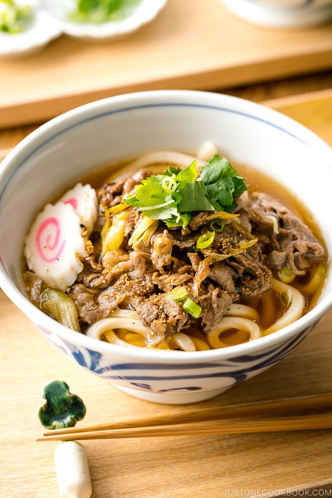

Back to Home
Beef Udon

Made of freshly cooked udon noodles in a fragrant hot soup, topped with sweet juicy sliced beef, the beef udon was delicious and perfect.
Ingredients
- Udon noodles – Can be frozen, fresh, or dried.
- Thinly sliced beef – It works great with “shabu shabu beef” from a Japanese market, but you can always slice your own.
- Negi (Japanese long onion) – You can use green onion as a substitute.
- Dashi (Japanese soup stock)
- Condiments: soy sauce, sake, mirin, and sugar.
- Optional toppings: narutomaki (fish cake), green onion, mitsuba (Japanese herb), etc.
Steps
- Prepare dashi broth and add the seasonings to make udon soup broth.
- Stir fry the negi (or green onion) and thinly sliced beef. Season them with soy sauce and sugar.
- Cook udon noodles according to the package instructions and drain well.
- Assemble udon noodles and broth in individual bowls. Top with cooked beef and other toppings of your choice.